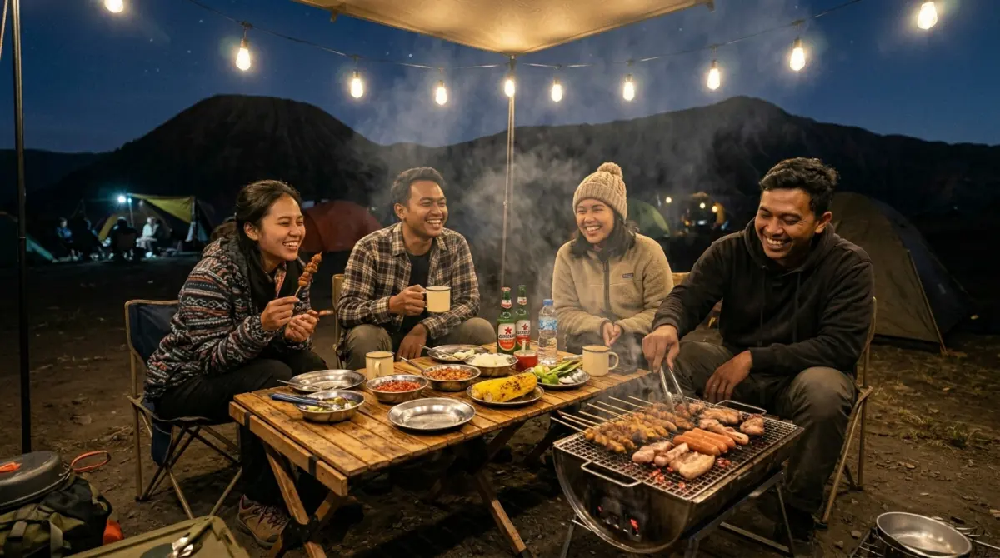

Inspirasi camping estetik di Batu — perpaduan sempurna antara keindahan alam dan kenyamanan modern.
Inspirasi camping estetik di Batu — perpaduan sempurna antara keindahan alam dan kenyamanan modern.
Coba ingat lagi, kapan terakhir kali kamu benar-benar terlepas dari notifikasi grup kantor dan rentetan revisi dari klien? Seringkali kita hanya duduk menatap layar, men-scroll feed media sosial di sela-sela jam istirahat, lalu melihat orang lain membagikan momen camping estetik dengan latar kabut tipis dan secangkir kopi hangat. Ada rasa iri yang diam-diam menyelinap, bukan? Kita sering menunda dengan alasan klasik: "nanti saja nunggu kuartal ini selesai" atau "ribet bawa anak kecil tidur di luar". Padahal, waktu terus berjalan.
Momen kedekatan bersama keluarga atau sahabat tidak bisa di-pause layaknya meeting di Zoom. Menunda liburan berkualitas hanya akan menumpuk penat dan memupuk penyesalan ketika menyadari kita kehilangan banyak waktu berharga. Jangan biarkan rencana liburan alammu berdebu menjadi wacana abadi. Mewujudkan kemah yang cantik, nyaman, dan menyatu dengan syahdunya matahari terbit di Batu sebenarnya jauh lebih mudah dari bayanganmu.
Mengapa Batu Menjadi Episentrum Liburan Alam Terbuka?
Mencari lokasi kemah yang tepat itu ibarat mencari lokasi kantor yang strategis. Kamu butuh akses yang mudah, lingkungan yang mendukung produktivitas (atau dalam hal ini, relaksasi), dan fasilitas yang memadai. Kawasan dataran tinggi Batu dan Malang secara konsisten selalu menduduki peringkat atas sebagai destinasi liburan alam terbaik di Jawa Timur.
Keunggulan utama kawasan ini tentu saja ada pada elevasinya yang menghadirkan suhu udara sejuk alami, berkisar antara 15 hingga 20 derajat Celsius di malam dan pagi hari. Ini adalah pendingin udara alami yang jauh lebih menyegarkan daripada AC sentral di gedung kantormu. Kondisi geografis yang dikelilingi gugusan pegunungan tidak hanya menawarkan udara bersih yang bebas polusi, tetapi juga lanskap visual yang luar biasa megah.
Bagi kalangan milenial dan keluarga muda yang mementingkan pengalaman visual, lanskap perbukitan di Batu memberikan latar belakang foto yang tak ada habisnya. Kamu tidak perlu jauh-jauh ke luar negeri untuk mendapatkan nuansa outdoor yang premium. Di sinilah perpaduan antara keindahan alam liar dan kenyamanan modern bisa kamu temukan dalam satu tempat.
Elemen Kunci Menciptakan Suasana "Camping Estetik"
Berkemah di era modern tidak lagi identik dengan ransel berat, baju berlumpur, atau tidur beralaskan matras tipis yang membuat punggung encok. Konsep camping estetik mengubah cara kita menikmati alam menjadi jauh lebih elegan. Agar feed media sosialmu dan memori liburanmu makin sempurna, perhatikan beberapa elemen krusial berikut ini:
Tenda Luas yang Nyaman Bak Apartemen Studio
Tenda adalah ruang kerjamu selama liburan. Jika meja kerjamu berantakan dan sempit, kamu pasti sumpek. Begitu pula dengan tenda. Tinggalkan tenda dome kecil yang mengharuskanmu merangkak saat masuk. Investasikan waktu untuk mencari layanan kemah yang menyediakan tenda berukuran besar, seperti model bell tent atau safari tent berbahan kanvas tebal.
Tenda dengan model ini tidak hanya kokoh menahan angin gunung, tapi juga memberikan ruang vertikal yang cukup untuk berdiri tegak. Di dalamnya, kamu bisa menempatkan kasur pegas atau airbed tebal, bantal empuk, dan karpet bohemian yang cantik. Tidur di alam terbuka kini bisa senyaman beristirahat di kasur rumah sendiri, membuat tubuhmu benar-benar recharge untuk menghadapi hari Senin nanti.
Bermain dengan Pencahayaan Hangat (Warm Lighting)
Pencahayaan adalah kunci dari semua estetika visual. Saat matahari tenggelam, area perkemahanmu harus bertransformasi menjadi tempat yang hangat dan mengundang. Hindari penggunaan lampu sorot berwarna putih terang (putih daylight) yang menyilaukan dan membuat suasana terasa seperti di ruang interogasi atau gudang pabrik.
Gunakanlah lampu bulb gantung atau string lights (lampu tumblr) berwarna kuning hangat (warm white). Lilitkan di tiang tenda atau gantung menyilang di area tempat duduk luar. Cahaya temaram yang berpadu dengan gelapnya malam pegunungan akan menciptakan siluet yang sangat fotogenik. Selain itu, cahaya kuning terbukti secara psikologis mampu menurunkan tingkat stres dan membuat obrolan malam terasa lebih intim.
Menata Area Makan dan Sudut BBQ yang Rapi
Bagian terbaik dari camping estetik adalah pengalaman kulinernya. Makan mi instan di gelas plastik sudah bukan zamannya lagi. Siapkan area khusus dengan meja lipat kayu dan kursi camping bergaya kanvas. Gunakan peralatan makan berbahan enamel atau kayu untuk menambah kesan rustic yang kental.
Untuk menu utama, sesi Barbeque (BBQ) adalah agenda wajib. Tata daging iris, sosis, paprika, dan jagung secara rapi di atas piring saji sebelum dipanggang. Kegiatan memanggang bersama di udara dingin Batu ini akan memecah kecanggungan. Sambil membalik daging, kamu dan pasangan atau sahabat bisa saling melempar candaan, melupakan sejenak target KPI (Key Performance Indicator) yang sering menghantui di akhir bulan.

Sesi BBQ di udara dingin Batu — momen kebersamaan yang menghangat badan dan hati sekaligus.Berburu Sunrise Menawan Tanpa Perlu Menguras Tenaga
Banyak orang yang mundur teratur saat mendengar kata "berburu sunrise" karena membayangkan harus mendaki berjam-jam di tengah gulita. Kabar baiknya, kamu tidak perlu menjadi atlet pendaki gunung untuk menikmati mahakarya alam ini.
Beberapa titik perkemahan di Batu dirancang khusus menghadap ke arah timur. Kamu hanya perlu mengatur alarm di smartphone pada pukul 04:30 pagi. Bayangkan skenario ini: kamu bangun dari kasur yang empuk, membuka ritsleting tenda, dan langsung disambut oleh lautan awan dengan semburat warna jingga, ungu, dan merah muda di ufuk timur.
Momen transisi dari gelap menuju terang ini sangat magis. Menyesap kopi V60 atau teh chamomile panas sambil duduk di kursi lipat depan tenda, memandangi siluet Gunung Arjuno yang perlahan terlihat jelas. Ini adalah privilese luar biasa. Kamu mendapatkan pemandangan ala puncak gunung, namun dengan kenyamanan fasilitas sekelas resort.
Liburan Luar Ruang yang Ramah Anak dan Anti-Ribet
Bagi keluarga muda, membawa anak kecil ke alam terbuka sering kali memicu kekhawatiran tersendiri. "Apakah toiletnya bersih?", "Bagaimana kalau anak kedinginan?", atau "Aman tidak untuk balita berlarian?". Kekhawatiran ini sangat valid. Sebagai orang tua, insting pertama adalah memastikan keselamatan dan kenyamanan buah hati.
Oleh karena itu, pilihlah area campsite yang memang dirancang family-friendly. Tempat yang ideal harus memiliki kontur tanah yang rata, rumput yang terawat tanpa semak berduri, dan jarak yang dekat dengan fasilitas kamar mandi bilas yang bersih.
Selain itu, pertimbangkan untuk menggunakan penyedia layanan kemah menyeluruh yang sudah merakitkan tenda dan menyiapkan peralatannya. Dengan begitu, setibanya di lokasi, kamu tidak perlu menguras keringat merakit besi tenda sambil menenangkan anak yang rewel kecapekan di perjalanan. Kamu bisa langsung mengajak mereka berlari menangkap capung, bermain bola di atas rumput, atau sekadar mengenalkan mereka pada tekstur embun pagi.
Penutup
Waktu adalah satu-satunya aset yang tidak bisa kita dapatkan kembali. Tumpukan pekerjaan akan selalu bisa diselesaikan besok, dan email dari atasan masih bisa dibalas pada hari kerja berikutnya. Namun, tawa riang anak-anak saat pertama kali melihat matahari terbit, atau obrolan dari hati ke hati bersama pasangan di bawah taburan bintang, adalah momen langka yang punya masa kedaluwarsa.
Jangan sampai kelak kamu menengok ke belakang dan menyadari bahwa masa mudamu hanya dihabiskan di balik kubikel kantor, tanpa cukup kenangan indah bersama mereka yang kamu cintai. Mulailah buka kalendermu, tandai akhir pekan ini, dan wujudkan camping estetik di sejuknya alam Batu. Keluar sejenak dari rutinitas bukanlah sebuah kemewahan, melainkan kebutuhan agar kamu bisa kembali menjadi manusia yang utuh.
FAQ — Camping Estetik Batu